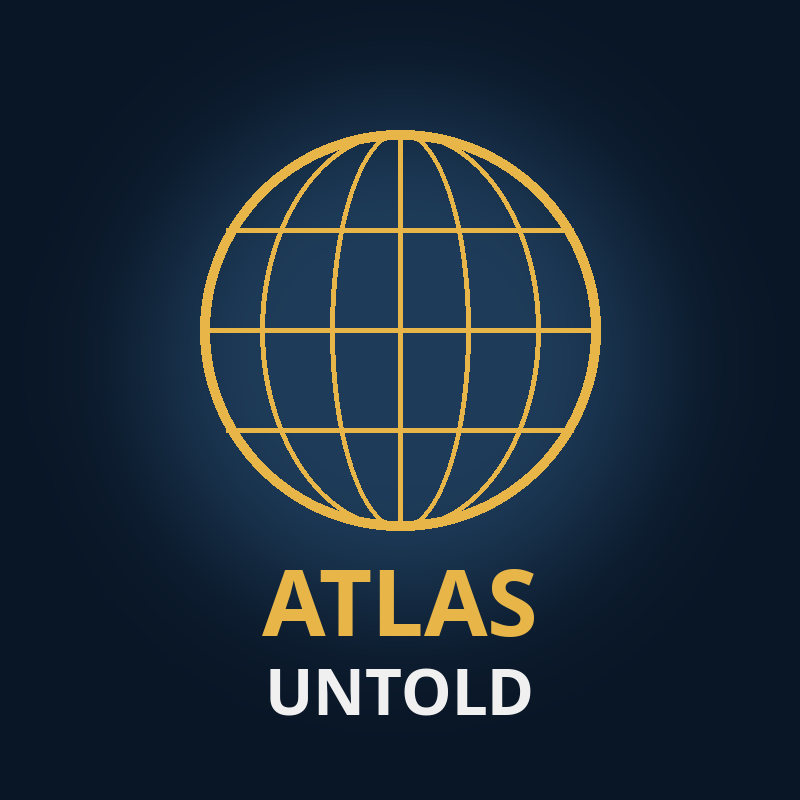

Atlas Untold
Real documentaries of every country and city on Earth: history, culture, people, food, cost of living and life abroad, with real footage and verified facts.

Real documentaries of every country and city on Earth: history, culture, people, food, cost of living and life abroad, with real footage and verified facts.